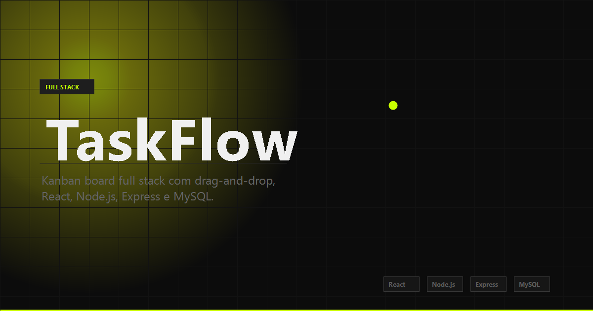

TaskFlow

Sobre o Projeto
Aplicação Kanban full stack com drag-and-drop, animações fluidas e persistência de dados em banco relacional. O TaskFlow permite gerenciar tarefas em colunas To Do, Doing e Done, com interface 100% reativa e API REST completa no backend.
O projeto demonstra domínio do ecossistema moderno de desenvolvimento web: frontend em React com GSAP para animações, scroll suave com Lenis, drag-and-drop nativo via @dnd-kit, e backend estruturado com Node.js, Express e MySQL.
Funcionalidades
- Kanban Board: três colunas (To Do, Doing, Done) com drag-and-drop entre elas
- CRUD completo: criar, editar, mover e excluir tarefas com confirmação
- Persistência real: todas as alterações salvas no MySQL via API REST
- Animações com GSAP: transições suaves na entrada e movimentação dos cards
- Scroll suave com Lenis: experiência de navegação refinada e natural
- Modal de detalhes: edição de título e descrição sem sair da tela
- Interface responsiva: funciona corretamente em desktop e mobile
Tecnologias
Arquitetura
Frontend (React + Vite): componentes funcionais com hooks customizados (useTasks) para comunicação com a API. GSAP gerencia animações de entrada dos cards e @dnd-kit controla o drag-and-drop com posicionamento persistido no banco.
Backend (Node.js + Express): API REST com 5 rotas para o CRUD de tarefas, usando o padrão Controller → Model → Database. Prepared statements para segurança contra SQL injection e CORS configurado para comunicação com o frontend.
Banco de dados (MySQL 8): schema simples e eficiente com tabela tasks contendo título, descrição, status e posição. A posição permite reordenar os cards dentro de cada coluna.
API — Endpoints
- GET /tasks — lista todas as tarefas ordenadas por posição
- GET /tasks/:id — retorna uma tarefa específica
- POST /tasks — cria nova tarefa (título, descrição, status)
- PUT /tasks/:id — atualiza tarefa (mover coluna, editar, reordenar)
- DELETE /tasks/:id — remove tarefa com confirmação